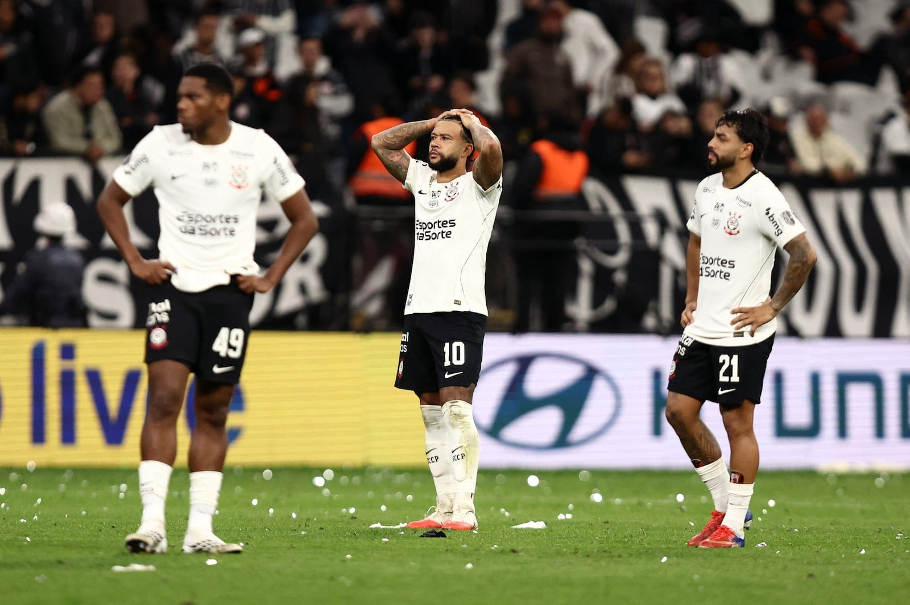

Corinthians vive fase assombrosa após ser eliminado na Libertadores e ser goleado em clássico

Corinthians vive fase assombrosa após ser eliminado na Libertadores e ser goleado em clássico
O Corinthians está em uma das piores fases de sua história, um ano que começava bem. Após o título da Supercopa do Brasil em cima do Flamengo, foi escancarando os problemas do elenco e da direção do clube. Este ano, o clube passou problemas de comando técnico, tanto que atualmente chegou ao seu 3° técnico na temporada, tendo demitido treinadores como Dorival Jr. e Fernando Diniz.
Contratado em abril após Dorival fracassar no Campeonato Paulista e ter jogos ruins no Campeonato Brasileiro. Fernando Diniz teve a missão de levar o Corinthians a melhores resultados. Desde lá, Corinthians voando baixo* na fase de grupos Libertadores, sendo líder com grande facilidade do seu grupo, avançou para as oitavas da Copa do Brasil e fechou o período pré-Copa com 7 vitórias no Brasileirão e ficou em 9° lugar.
Durante a pausa para a Copa do Mundo, o clube também viveu uma novela com a renovação de Memphis Depay, que queria permanecer no clube, mas o clube não tinha como fazer renovar por conta de valores. Teve período que ele ficou de fora do clube, mas mudaram de ideia e conseguiram fazer um novo contrato mais acessível.
Mesmo com a renovação de um dos seus principais jogadores, o Corinthians entrou em uma má fase.
Foi eliminado nas oitavas da Copa do Brasil para o Internacional; foi eliminado nas quartas da Libertadores para o Estudiantes da Argentina; e, atualmente, está em uma das piores fases da sua história no Campeonato Brasileiro, acumulando 8 derrotas seguidas.
A última vez que venceu no Campeonato Brasileiro foi no dia 23 de julho, completando três meses sem vencer. Por fim, no último clássico, Corinthians levou mais uma goleada histórica contra o Palmeiras, no Nubank Parque.
A partida teve de tudo, com direito a gol contra, pênalti defendido e até gritos de olé da torcida, resultando em Palmeiras 4×1 Corinthians.
Agora, após o empate contra o Vitória, permanece na 16ª colocação do Campeonato Brasileiro e está flertando com a última Zona: o rebaixamento.
Após tantos fracassos, Diniz é demitido do Corinthians. Dando espaço para o novo técnico do Corinthians e já liderando a equipe contra o Vitória nessa segunda-feira (19). Clarence Seedorf, ex-jogador holandês histórico por suas passagens por Ajax, Real Madrid, Inter de Milão, Milan e Botafogo. Chegou com um contrato até o fim de 2027, porém chega com desconfiança da torcida e da imprensa, como treinador. Seedorf nunca fez um trabalho digno desse cargo, e já não trabalha com isso há sete anos.
Se torna uma ação arriscada apostar em um treinador sem experiência como técnico e em má fase no Brasil, dando possibilidades de dar errado.
Feito por: G.abbsp